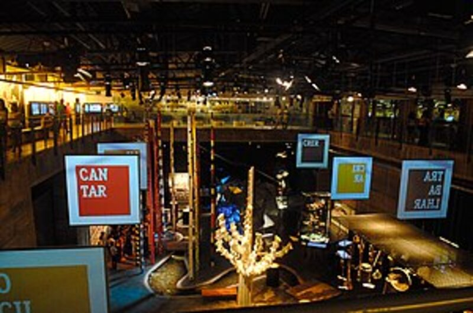
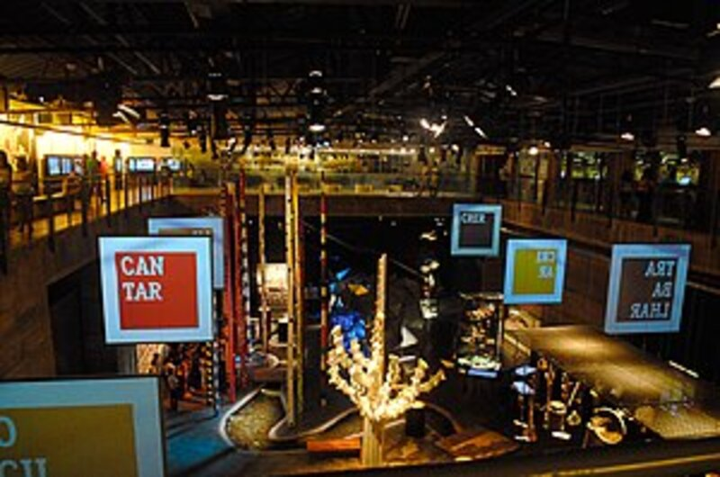
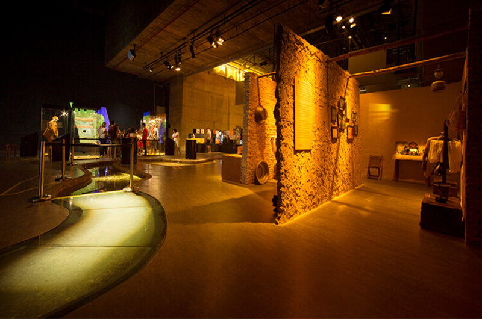

Paço Frevo – Centro de Referência em Salvaguarda do Frevo
Um dos mais modernos equipamentos culturais do Brasil, o Cais do Sertão, instalado no antigo Armazém 10 do Porto do Recife, é um local de convivência, diversão e conhecimento, polo gerador de novas ideias e experiências. Abrigando e reverenciando a obra de Luiz Gonzaga, o grande homenageado do espaço.
O Museu Cais do Sertão é um museu interativo sobre o Sertão e Luiz Gonzaga localizado na cidade do Recife, capital de Pernambuco, Brasil. Foi eleito um dos vinte melhores museus da América do Sul em 2015 pelos usuários do site de viagens TripAdvisor.
 

Histórico
Um dos mais modernos equipamentos culturais do Brasil, o Cais do Sertão, instalado no antigo Armazém 10 do Porto do Recife, é um local de convivência, diversão e conhecimento, polo gerador de novas ideias e experiências. Abrigando e reverenciando a obra de Luiz Gonzaga, o grande homenageado do espaço, traz para a beira-mar da capital do estado um pouco do solo rico e generoso da cultura popular do sertão. O museu teve como curadora e diretora de criação a socióloga pernambucana Isa Grinspum Ferraz, também autora do Museu da Língua Portuguesa em São Paulo. O Cais do Sertão utiliza os mais variados e inovadores recursos expositivos e tecnológicos para, em um diálogo entre a tradição e a invenção, proporcionar aos visitantes uma experiência de imersão no belo e sofrido universo sertanejo — origem e fonte de inspiração gonzaguiana — em toda a sua diversidade e complexidade.
Atualmente serve como ponto de encontro de jovens, desportistas, artistas, turistas e moradores da cidade. Além de ser palco de comemorações e apresentações artísticas.
como chegar